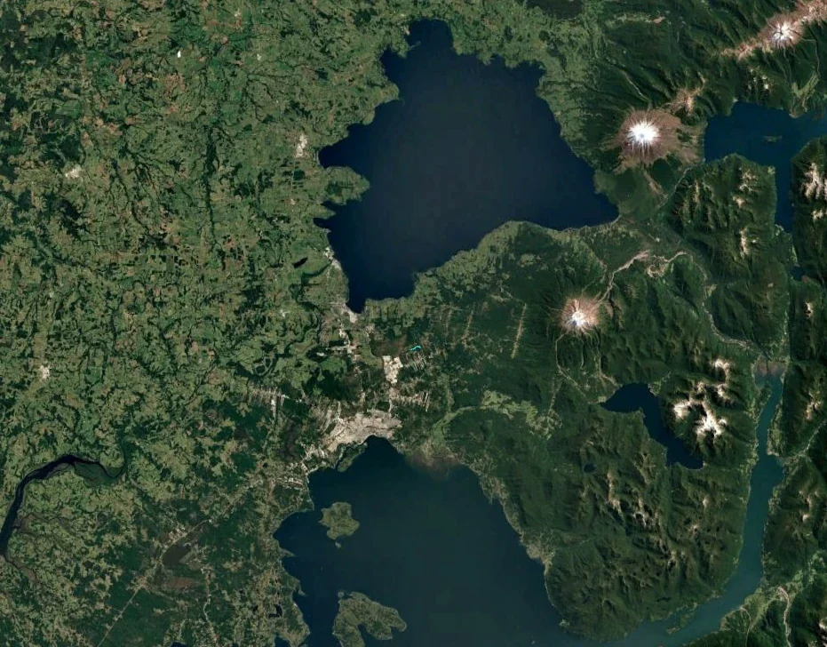

Fundos Puerto Varas · Alerce, Región de Los Lagos
Descubre tu entorno
Fundos Puerto Varas se encuentra en un punto estratégico entre Puerto Montt y Puerto Varas. Una ubicación que permite disfrutar de la tranquilidad y naturaleza del sur, manteniendo una excelente conexión con dos de las ciudades más importantes de la Región de Los Lagos.
Boceto para revisar. Fotos recortadas del folleto (baja resolución). Distancias sin "≈" son las del folleto; las con "≈" son en línea recta. La ubicación de Parque Vivo Alerces es aproximada.

DatocuriosoA solo 10 km del proyecto está la estación de tren: recorre desde Llanquihue hasta Puerto Montt.
Dato curiosoA solo 10 km del proyecto está la estación de tren: recorre desde Llanquihue hasta Puerto Montt.